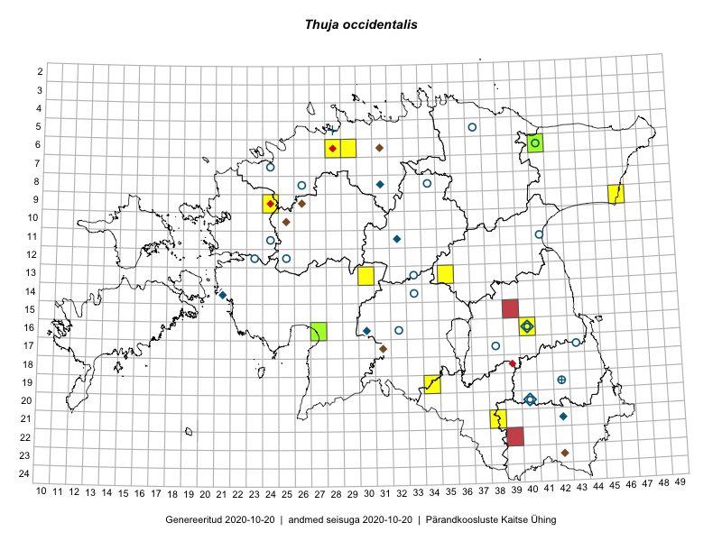

Thuja occidentalis
Uuendatud: 2016-12-01
Kaardile koondatud taksonid: Thuja occidentalis L.

Kaart põhineb 6 kirjel.
Viited andmebaasikirjetele
- Eeva-Maria Jeletsky, Tarmo Niitla: 2015-08-12: 21-38: GPS punkt
- Eeva-Maria Jeletsky, Tarmo Niitla: 2015-08-12: 21-38: ala
- Ott Luuk, Liina Oja: 2015-05-11: 13-35: GPS punkt
- Toomas Kukk: 2016-06-06: 06-28: GPS punkt
- Toomas Kukk, Sander Laherand: 2016-08-29: 06-29: GPS punkt
- Tõnu Ploompuu, Hannes Pehlak, Marko Veinbergs: 2016-07-21: 13-30: ala